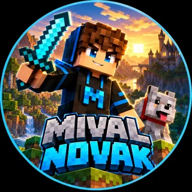
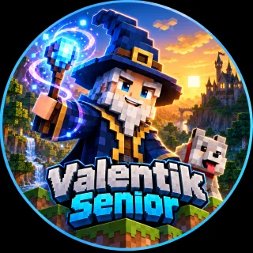

Nápady jsou Máťovy
Co vyrobíme, vymýšlí Máťa. Taťka pomáhá najít první krok.
Dílna na vlastní add-ony
Tady vymýšlíme a vyrábíme vlastní věci do Minecraftu. Nové bloky, předměty a nápady, které ve hře ještě nikdo neviděl.
Minecraft Factory je naše malá dílna. Hrát Minecraft umíme. Teď se chceme naučit, jak do něj přidat něco vlastního.
Nebudeme se nejdřív učit teorii. Nejdřív něco vyrobíme a pak zjistíme, jak to funguje. Každé setkání by mělo skončit něčím, co se dá ve hře vyzkoušet.
Co vyrobíme, vymýšlí Máťa. Taťka pomáhá najít první krok.
Nejdřív jeden blok. Pak textura. Pak chování. Pak něco většího.
Když něco nefunguje, není to průšvih. Je to hádanka, kterou vyřešíme.
Každý funkční kousek uložíme, abychom se k němu mohli vrátit.

Tvůrce a vynálezce · 9 let
Hráč Minecraftu, který má hlavu plnou nápadů. Vybírá, co se bude vyrábět.

Pomocník a průvodce
Připravuje nástroje, pomáhá s problémy a hlídá, aby to nebylo moc těžké.
Takhle to máme rozmyšlené. Není to pevný rozvrh, u zajímavé věci klidně zůstaneme déle.
Tady se budou objevovat naše add-ony. Hotové budou mít odkaz ke stažení.
Krátké zápisky o tom, co jsme kdy udělali. Nejnovější nahoře.